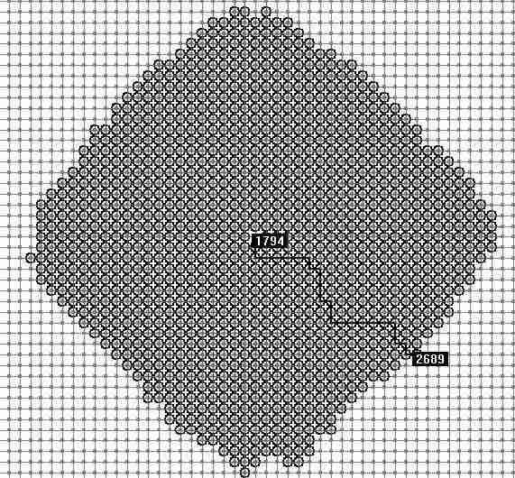
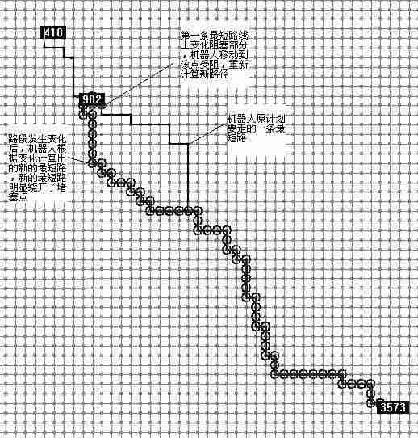
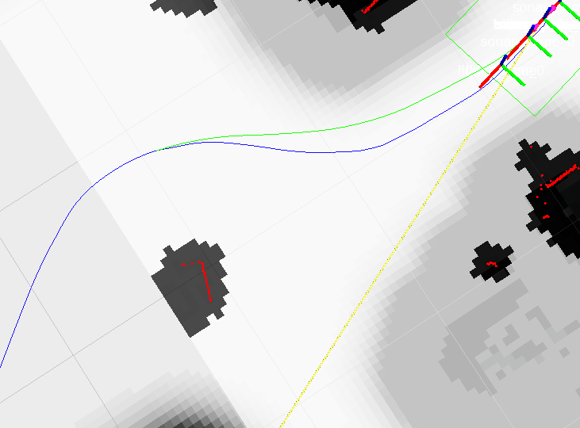
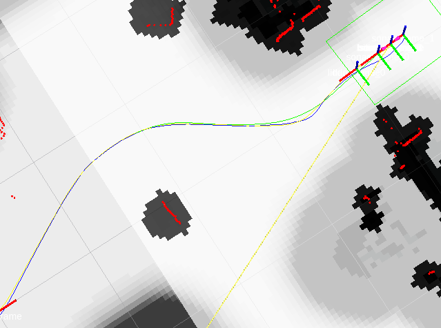

ROS导航
源码下载
轨迹跟随 局部规划 全局规划教程 navigation导航包
轨迹规划
首先在nav导航包中的nav_core软件包就已经包含了Dijkstra算法，俗称D星算法，只需在launch文件中指定全局导航插件为carrot_planner/CarrotPlanner即可使用
<param name="base_global_planner" value="carrot_planner/CarrotPlanner" />
Dijkstra算法
(Dijkstra)算法是典型最短路径算法，用于计算一个节点到其他各个节点的最短路径。 
这是在drew 程序中4000个节点的随机路网上Dijkstra算法搜索最短路的演示，黑色圆圈表示经过遍历计算过的点由图中可以看到Dijkstra算法从起始点开始向周围层层计算扩展，在计算大量节点后，到达目标点。所以速度慢效率低。
2. A星算法
代价计算 这里我们允许机器人在栅格地图中沿着八邻域行走，所以我们使用对角距离来计算代价。 公式表示为：
f(n)=g(n)+h(n) 其中f(n) 是节点n从初始点到目标点的估价函数， g(n) 是在状态空间中从初始节点到n节点的实际代价， h(n)是从n到目标节点最佳路径的估计代价。
保证找到最短路径（最优解的）条件，关键在于估价函数h(n)的选取： 估价值h(n)<= n到目标节点的距离实际值，这种情况下，搜索的点数多，搜索范围大，效率低。但能得到最优解。 如果 估价值>实际值, 搜索的点数少，搜索范围小，效率高，但不能保证得到最优解。 估价值与实际值越接近，估价函数取得就越好。 明显优于Dijstra算法的毫无无方向的向四周搜索。
A算法和Dijistra算法的区别在于有无估价值，Dijistra算法相当于A算法中估价值为0的情况。
实现步骤： 1. 初始化两个集合： 2. 一个存放要处理点的集合open_set 3. 另一个存放已经处理过点的集合close_set 4. 将起点放入open_set，并设置代价为最高代价0 5. 开始遍历 6. 如果open_set不为空，则从中选取代价最高的点n 7. 若点n为终点： a. 从终点开始逐渐追踪parent节点，一直到起点 b. 返回结果路径，算法结束 8. 若点n不为终点 a. 将点n从open_set中删除，放到close_set中 b. 遍历节点n的8邻域节点： i. 如果邻域节点m在close_set中，则直接调过 ii. 如果邻域节点m不在open_set中： i. 设置节点m的parent为节点n ii. 计算节点m的cost代价 iii. 将节点m加入open_set中
2. D星算法
“D*算法”的名称源自 Dynamic A Star,最初由Anthony Stentz于“Optimal and Efficient Path Planning for Partially-Known Environments”中介绍。它是一种启发式的路径搜索算法，适合面对周围环境未知或者周围环境存在动态变化的场景。
D星算法的原理
1.先用Dijstra算法从目标节点G向起始节点搜索。储存路网中目标点到各个节点的最短路和该位置到目标点的实际值h,k（k为所有变化h之中最小的值,当前为k=h。每个节点包含上一节点到目标点的最短路信息1(2),2(5),5(4)，4（7）。则1到4的最短路为1-2-5-4。 原OPEN和CLOSE中节点信息保存。
2.机器人沿最短路开始移动，在移动的下一节点没有变化时，无需计算，利用上一步Dijstra计算出的最短路信息从出发点向后追述即可，当在Y点探测到下一节点X状态发生改变，如堵塞。机器人首先调整自己在当前位置Y到目标点G的实际值h(Y)，h(Y)=X到Y的新权值c(X,Y)+X的原实际值h(X).X为下一节点(到目标点方向Y->X->G），Y是当前点。k值取h值变化前后的最小。
3.用A或其它算法计算，这里假设用A算法,遍历Y的子节点，点放入CLOSE,调整Y的子节点a的h值，h(a)=h(Y)+Y到子节点a的权重C(Y,a),比较a点是否存在于OPEN和CLOSE中，方法如下：

在ROS中注册一个全局规划插件
除此之外还可以自己开发全局规划算法就是为全局规划类创建插件，将其集成到move_base包的全局规划模块nav_core::BaseGlobalPlanner中。
步骤如下：
1. 编写头文件和源文件
如果创建的是全局规划类插件，那么该类就要继承自nav_core::BaseGlobalPlanner
class plugins_Name : public nav_core::BaseGlobalPlanner
最终规划的方法都存储在plugins_Name类的makePlan方法中
bool makePlan（start，goal，plan）
只需在makePlan中将分析的路径点保存到plan中即可完成该类的路径规划;
3. 导出为插件
首先需要通过导出将全局规划类注册为插件。它必须被标记为一个导出的类。这是通过特殊宏PLUGINLIB_EXPORT_CLASS完成的。这个宏可以放在构成插件库的任何源（.cpp）文件中，通常放在导出类的.cpp文件的末尾。
#include <pluginlib/class_list_macros.h>
PLUGINLIB_EXPORT_CLASS(global_planner::GlobalPlanner, nav_core::BaseGlobalPlanner);
这将使global_planner::GlobalPlanner类注册为move_base包中nav_core::BaseGlobalPlanner类的插件。
3. 编译
要编译上面创建的全局规划库，必须将其添加到CMakeLists.txt中生成动态链接库。添加代码：
add_library(global_planner_lib src/global_planner.cpp)
然后在终端中运行catkin_make，在catkin工作空间目录中生成二进制文件。这将在lib目录中创建库文件 工作空间下的/devel/lib/libglobal_planner_lib。
4. 插件描述文件
插件描述文件是一个XML文件，用于以机器可读格式存储有关插件的所有重要信息。它包含有关插件库的信息，插件的名称，插件的类型等。 内容如下所示：
<library path="lib/libglobal_planner_lib">
<class name="global_planner/GlobalPlanner" type="global_planner::GlobalPlanner" base_class_type="nav_core::BaseGlobalPlanner">
<description>This is a global planner plugin by iroboapp project.</description>
</class>
</library>
在第一行 <library path="lib/libglobal_planner_lib">我们指定插件库的路径
其中lib是在目录中的文件夹devel中。在此行中，我们首先指定我们将在move_base启动文件中使用的global_planner插件的名称作为参数。base_class_type指定了实现插件的基类的名称，在我们的例子中是nav_core::BaseGlobalPlanner。
我们需要这个文件用来允许ROS系统自动发现，加载。
4. 注册插件到ROS系统
为了让pluginlib在所有ROS程序包上查询系统上的所有可用插件，每个程序包都必须明确指定其导出的插件，哪些程序包库包含这些插件。 因此需要在package.xml后面添加以下内容：
<export>
<nav_core plugin="${prefix}/global_planner_plugin.xml" />
</export>
${PREFIX}
会自动确定global_planner_plugin.xml文件完整的路径
注意：为了使上述导出命令正常工作，提供程序包必须直接依赖于包含插件接口的程序包，这在全局规划程序的情况下是nav_core。因此，global_planner软件包在其package.xml中必须包含以下内容：
xml <build_depend>nav_core</build_depend> <run_depend>nav_core</run_depend>这将告诉编译器对于nav_core包的依赖性
可以通过rospack查询ROS包系统，以查看任何给定的包中的可用的插件。如下：
rospack plugins --attrib=plugin nav_core
自定义全局导航的头文件(固定模板)
#ifndef GLOBAL_PLANNER_CPP
#define GLOBAL_PLANNER_CPP
#include <ros/ros.h>
#include <costmap_2d/costmap_2d_ros.h>
#include <costmap_2d/costmap_2d.h>
#include <nav_core/base_global_planner.h>
#include <geometry_msgs/PoseStamped.h>
#include <angles/angles.h>
#include <base_local_planner/world_model.h>
#include <base_local_planner/costmap_model.h>
namespace trajectoryFollowGlobal {
class trajectoryFollowGlobal : public nav_core::BaseGlobalPlanner {
public:
trajectoryFollowGlobal();
trajectoryFollowGlobal(std::string name, costmap_2d::Costmap2DROS* costmap_ros);
/** overridden classes from interface nav_core::BaseGlobalPlanner **/
void initialize(std::string name, costmap_2d::Costmap2DROS* costmap_ros);
bool makePlan(const geometry_msgs::PoseStamped& start,
const geometry_msgs::PoseStamped& goal,
std::vector<geometry_msgs::PoseStamped>& plan
);
};
};
#endif
自定义全局导航的源文件
源文件可以使用navigation的导航包中的carrot_planner.cpp作为模板，在他的基础上进行开发自己的算法。
catkin_make
source devel/setup.bash
rospack plugins --attrib=plugin nav_core # 查看当前环境下加载的插件
在ROS中自己注册一个局部路径规划器插件
1. 编写头文件和源文件
如果创建的是局部规划类插件，那么该类就要继承自nav_core::BaseLocalPlanner
class plugins_Name : public nav_core::BaseLocalPlanner
首先需要通过导出将全局规划类注册为插件。它必须被标记为一个导出的类。这是通过特殊宏PLUGINLIB_EXPORT_CLASS完成的。这个宏可以放在构成插件库的任何源（.cpp）文件中。
#include <pluginlib/class_list_macros.h>
PLUGINLIB_DECLARE_CLASS(simple_local_planner, SimplePlannerROS, simple_local_planner::SimplePlannerROS, nav_core::BaseLocalPlanner);
这将使simple_local_planner::SimplePlannerROS类注册为move_base包中nav_core::BaseLocalPlanner。
2. 编译
与全局规划插件相同，生成动态链接库
add_library(simple_local_planner
src/simple_local_planner.cpp
)
3. 插件描述文件
编译完成后，在devel文件下会生成名称为libsimple_local_planner的链接库。这时就需要一个xml的插件描述文件，用于以机器可读格式存储有关插件的所有重要信息。它包含有关插件库的信息，插件的名称，插件的类型等。 内容如下所示：
<library path="lib/libsimple_local_planner">
<class name ="simple_local_planner/SimplePlannerROS" type ="simple_local_planner::SimplePlannerROS" base_class_type= "nav_core::BaseLocalPlanner">
<description>
Simple Plugin for BaseLocalPlanner that allows you to follow the global path as it is.
</description>
</class>
</library>
4. 注册插件到ros系统
为了让pluginlib在所有ROS程序包上查询系统上的所有可用插件，每个程序包都必须明确指定其导出的插件，哪些程序包库包含这些插件。 因此需要在package.xml后面添加以下内容：
<export>
<nav_core plugin="${prefix}/slp_plugin.xml"/>
</export>
${PREFIX}
自动确定slp_plugin.xml插件描述文件完整的路径
坦克导航功能的改进
实现功能
- 两点之间，实现直线前进。
- 局部路径规划范围内使用teb规划进行避障
实现方法
-
使用navfn/NavfnROS全局导航插件进行全局导航，该插件使用A*算法，起点到终点在没有障碍物的情况下是路径是一条直线。在遇到障碍物的情况下，路径是直线运动到障碍物的膨胀 边缘，然后转弯， 
-
局部路径使用teb进行导航规划。局部路径不会完全贴和全局路径，这和参数设置有关，全局地图的路径生成主要考虑全局地图的膨胀系数，而TEB的导航路径主要参考teb参数中的膨胀路径。 需要让teb路径贴和全局路径主要设置两个参数
global_plan_viapoint_seq # 在全局路径上按照一定间距，以坦克位置为起点生成途径点，负数表示不生成，点数越多越贴和
inflation_dist # 坦克局部障碍物的膨胀系数
weight_viapoint # 坦克路过途径点的权重，权重越大越贴和全局路径
调整参数的效果 
出现的问题
- 坦克雷达出现点漂移，在坦克的轮廓范围内出现雷达点，使坦克判断碰撞到了障碍物，无法移动。